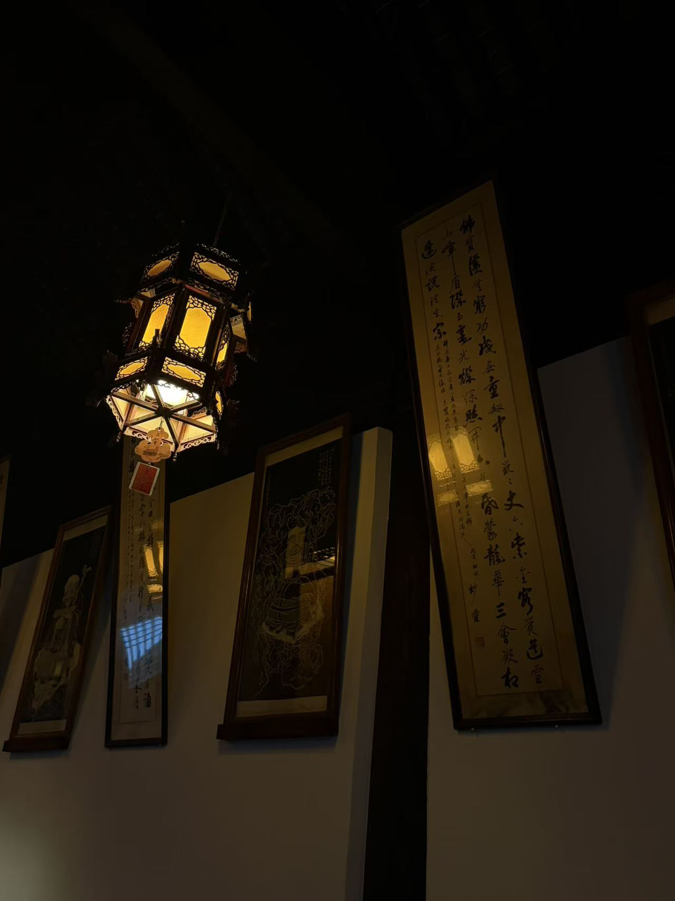

0104
移建现址，木上留年
梁间题记为大殿提供了重要年代线索。
看模型时
1320 是纪年节点；当前形制不能直接等同于元代原貌。
文物建筑 · 单体三维研究上海 · 普陀
同一座殿，为什么曾经多出一层檐？
1320 年题记、清末加檐、1963—64 年落架大修。沿着现存木构与档案线索，辨认同一座殿的不同时间。
沿着屋檐，进入时间第一人称参访 · 无需登录 · 默认独处
滑动改变真实三维组间距离 · 非建筑实测拆卸路径
拖动转头，用 WASD 或右侧方向键缓缓向前。建筑并不是一件可以随意旋转的展品。
聚焦模型后可用方向键旋转；入殿后可用 W A S D 移动。拖动环绕 · 滚轮缩放 · 右键平移
今天看到的，不是某一年的定格。
一条屋檐里，叠着题记、加建、修缮和仍未解开的疑问。
时间轴 · 形制切换在同一座殿里观察变化
先不要急着给建筑贴上年代标签。拖动时间轴，看看每个时期留下了什么线索，又改变了什么。
梁间题记为大殿提供了重要年代线索。
1320 是纪年节点；当前形制不能直接等同于元代原貌。
增加、去除，再回望。每一次变化都看得见；每一个没有证据的尺寸，也应留白。线描只说明檐层关系。
模型状态：程序几何 · 非实测复原。清代双檐为研究推定；屋面细部、构件节点与殿内造像尚无足够资料复原。室内仅保留研究性祭台体量。
03 / EVIDENCE ATLAS四重证据 · 不同时间的同一座殿
一张旧照，一份待寻的图纸，一次现场观察，一个可以转动的模型。它们不是四个标准答案，而是四次不同的提问。
沿着一次真正的考察，学习提出自己的问题。
这不是 AI 仿声，也不是研究者本人在对你说话。我们以 1950 年勘查经过为线索，编写三站式现代导览：每一步都指向可查资料。
1950 年勘查经过：公开转引原文 ↗刘敦桢《真如寺正殿》据书目记录发表于 1951 年；论文原刊全文仍待获取核对。最初的交通安全问题引出古迹考察。调查者在正殿发现元延祐七年题记，于是进一步核查木构年代。
这条发现最先帮助确定的是哪类信息？
选择一个答案，看哪些判断有证据。
导览方法：把“研究者如何得出结论”的过程转译为观察、选择、核验。叙事脚本为本站编写，未将转引材料包装成刘敦桢第一人称原话，也不将 1963—64 年工程决策直接归于他。
构件观察 · 点击模型热点一座殿的三维索引
点选屋面、梁架、斗栱、隔扇、柱网或台基，查看来源与模型状态。
公开记载给出单檐／双檐的阶段变化。当前的举架与瓦作细节只是形制表达。
落架大修回顾提到古架测绘与构件复原；若取得图纸，可把节点升级为可量读模型。
资料记载殿内16根柱中有10根为元代柏木柱；旧柱的准确位置仍待核验。
资料记载6个石柱础为元代旧物。模型目前不虚构其具体分布与更换历史。
访客先拍下眼前的檐口，再在手机上切换清代加檐与1960年代去檐的示意，最后回答：你能辨认哪一处是真实可见的？
当前可体验：四重证据档案桌 ↗；实体导览卡尚未制作。每一个构件有三行：先观察什么、哪项材料有据、还缺什么证据。公开档案进入后，可继续叠加年份、编号与原始图像。
当前可体验：1950 年三站导览 ↗与三维构件热点。以地方口述、旧照片征集与建筑观察路线组成寺外展陈。宗教空间的活动和影像使用，应先与管理者确认许可与边界。
下一阶段提案：照片来源核验、授权与共同策展。研究立场把推演留在明处
1960年代的大修选择恢复元代单檐形制。这个选择可以被记录；具体哪些构件被替换、哪些细节依据类比补配，则需要档案和现场证据继续回答。
元延祐七年题记与光绪二十三年重建题记，让两个时间在同一座殿内相遇。
可定位的文字记录公开资料记载，殿内16根柱中有10根为元代柏木柱，6个石柱础为元代旧物。
需要逐件编号与核验恢复某一时期的样貌，会涉及材料、形制与历史层次的取舍。模型把尚未核实的细节留在明处。
需要修缮档案解释当一座建筑经历多次改建，
我们希望哪一段历史更清晰地被看见？
现场笔记 · 由你提供照片是线索，不是模型
以下照片来自项目发起者。它们能帮助建立观察清单，但单张照片不能替代正射影像、构件测绘或修缮记录。

资料目录公开信息 · 第一轮
本原型为研究与表达练习，不代表寺方、文物主管部门或专业修缮单位的官方意见。公开网页信息需要与原始档案及专业人员核对。